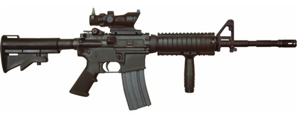

The M4 carbine is a shorter and lighter variant of the M16A2 assault rifle. The M4 is a 5.56×45mm NATO, air-cooled, direct impingement gas-operated, magazine-fed carbine. It has a 14.5 in (370 mm) barrel and a telescoping stock. The M4 carbine is heavily used by the United States Armed Forces and is replacing the M16 rifle in most United States Army and United States Marine Corps combat units as the primary infantry weapon.[5][6] The M4 is also capable of mounting the M203 grenade launcher. The distinctive step in its barrel is for mounting the M203 with the standard hardware. The M4 is capable of firing in semi-automatic and three-round burst (like the M16A2 and M16A4), while the M4A1 is capable of firing in semi-auto and full automatic (like the M16A1 and M16A3).
The M4 was the first gas-operated shotgun produced by Benelli. Its function is designed around an entirely new method called the "auto regulating gas operated" (ARGO) system. The short-stroke design uses two stainless-steel self-cleaning pistons located just ahead of the chamber to function opposite the rotating bolt, thereby eliminating the need for the complex mechanisms found on other gas-actuated automatics. The ARGO incorporates only four parts: two symmetrical shrouds containing two small steel gas pistons.
The IMI Desert Eagle is a semi-automatic handgun notable for chambering the largest centerfire cartridge of any magazine fed, self-loading pistol. It has a unique design with a triangular barrel and large muzzle. Magnum Research Inc. (MRI) designed and developed the Desert Eagle. The design was refined and the actual pistols were manufactured by Israel Military Industries until 1995, when MRI shifted the manufacturing contract to Saco Defense in Saco, Maine. In 1998, MRI moved manufacturing back to IMI, which later reorganized under the name Israel Weapon Industries. Since 2009, the Desert Eagle Pistol has been produced in the United States at MRI's Pillager, MN facility.
The Accuracy International Arctic Warfare rifle is a bolt-action sniper rifle designed and manufactured by the British company Accuracy International. It has proved popular as a civilian, police, and military rifle since its introduction in the 1980s. The rifles have some features that improve performance in very cold conditions, without impairing operation in less extreme conditions. Arctic Warfare rifles are generally fitted with a Schmidt & Bender PM II telescopic sight with fixed or variable magnification. Variable telescopic sights can be used if the operator wants more flexibility to shoot at varying ranges, or when a wide field of view is required. Accuracy International actively promotes fitting the German-made Schmidt & Bender MILITARY MK II product line as sighting components on their rifles, which is rare for a rifle manufacturer.